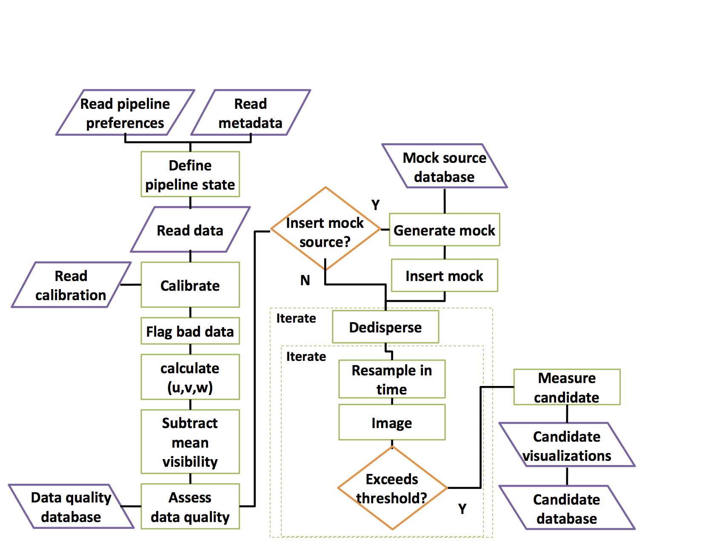

Using a Search Pipeline
A transient search is composed of a series of steps to read, prepare, and process data…
The standard search is described by this flow chart:

The pipeline module has the following members:
-
rfpipe.pipeline.pipeline_scan(st, segments=None, cfile=None, vys_timeout=10)[source]
Given rfpipe state run search pipline on all segments in a scan.
state/preference has fftmode that will determine functions used here.
-
rfpipe.pipeline.pipeline_seg(st, segment, cfile=None, vys_timeout=10)[source]
Submit pipeline processing of a single segment on a single node.
state/preference has fftmode that will determine functions used here.